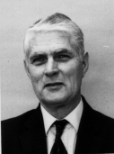

Queen's University
at Kingston

The L. Lorne Campbell Conference
on Communications
Friday, August 1, 1997
Room 210, Walter Light Hall
Queen's University
The Department of Mathematics and Statistics at Queen's University
is organizing ``The L. Lorne Campbell Conference
on Communications'' on Friday, August 1, 1997.
The conference is in honor of Professor Emeritus
L. Lorne Campbell, and in recognition for his oustanding
academic career and his significant contributions to the university
and the international Mathematics and Engineering communities.
Please click on the following for information on the conference:
For additional information, please contact one of the
members of the Organizing Committee: